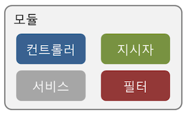
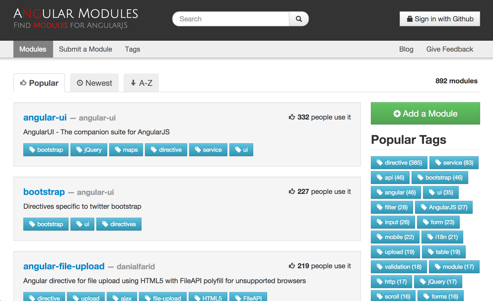
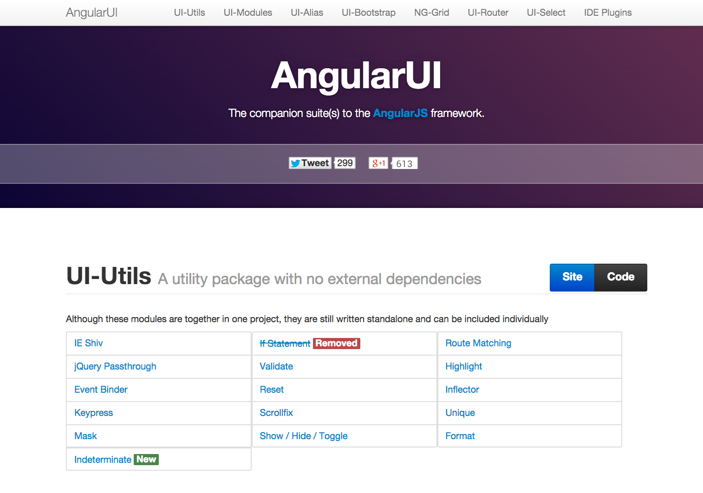
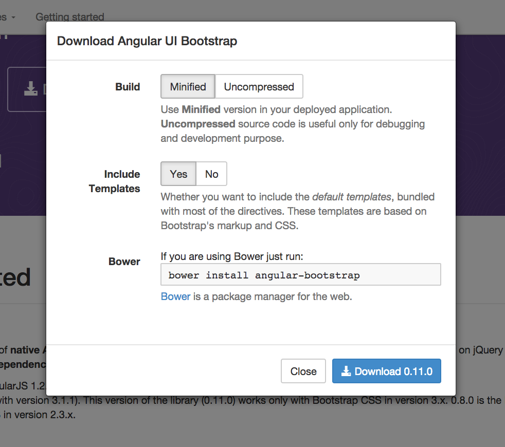

모듈을 이용하여 어플리케이션 구성하기
모듈 API
모듈Module은 대체로 관련된 기능을 하나로 묶어 다른 코드와 결합도를 줄이고 재사용성을 높이 기 위해 사용한다. AngularJS도 모듈을 만들 수 있는 기능을 다음과 같은 API 통하여 제공한다.
angular.module("모듈이름",["사용할 모듈","…"]);angular.module 함수를 사용해 모듈을 만들면 모듈 인스턴스가 반환되는데 해당 모듈 인스턴스를 통해 다음 그림과 같이 컨트롤러, 서비스, 지시자, 필터들을 담을 수 있다. 즉 모듈을 통해서 연관된 컴포넌트들을 묶어 코드의 재사용성을 높일 수 있다.

또한 모듈을 선언할 때 참조하는 모듈을 명시할 수 있다. 가령 A라는 모듈을 선언할 때 B라는 모듈을 참조한다고 작성하면 B에 담겨있는 컨트롤러, 지시자, 서비스, 필터를 A 모듈에서 사용할 수 있다.
그럼 Get Started AngularJS에서 만든 사용자 관리 어플리케이션에 모듈을 적용해 보자. 우선 userMgnt라는 모듈을 선언하고 해당 모듈에 mainCtrl 컨트롤러를 등록하자. app.js파일을 아래와 같이 수정한다.
angular.module('userMgnt', []).
//userMgnt 모듈을 선언하였다. 이 모듈이 참조하는 다른 모듈이 없어 빈 배열을 2번째 인자 값으로 주었다.
controller('mainCtrl', ['$scope', function ($scope) {
//생략, 기존 컨트롤러 함수 내용과 동일
}]);
//모듈 API를 이용하여 userMgnt 모듈을 선언하면 모듈 userMgnt 모듈 인스턴스가 반환된다. 반환된 모듈 인스턴스에 controller 메소드를 사용하여 mainCtrl 컨트롤러를 등록한다.이렇게 모듈을 정의 하였으면 해당 모듈을 템플릿에서 사용한다고 선언해야 한다. 모듈을 사용할 때는 ng-app 속성에 값으로 주면 된다. 다음과 같이 index.html에 작성한 템플릿을 수정하자.
<html ng-app="userMgnt">
<!-- 사용할 모듈이름을 ng-app 속성의 값으로 준다 -->이제 index.html에서 html DOM 요소 하위 모든 영역이 AngularJS 어플리케이션 영역이 되는 것이고 해당 영역은 userMgnt 모듈에 의하여 관리가 된다. 즉 userMgnt 모듈에 담긴 지시자, 서비스, 필터, 컨틀로러 모두 html DOM 요소 안에서 사용이 가능해지는 것이다.
모듈 인스턴스 가져오기
앞에서 모듈을 선언할 때 우리는 다음과 같이 선언하였다.
angular.module("모듈이름",["사용할 모듈","…"]);가령 app.js 에서 위와 같이 모듈 만 선언하였다고 하자. 그리고 controller.js에서는 해당 모듈의 컨트롤러들을 모두 선언한다고 다음과 같이 코드를 작성하였다.
angular.module("모듈이름",["사용할 모듈","…"])
.controller("controllerA",['$scope',function($scope){ ... }])
.controller("controllerB",['$scope',function($scope){ ... }])
.controller("controllerC",['$scope',function($scope){ ... }]);위와 같이 코드를 작성하면 사실 app.js에서 모듈을 선언한고 다시 controller.js에서 기존 모듈을 덮어씌우면서 다시 모듈을 선언하게 된다. 그렇기 때문에 우리는 선언되어진 모듈 인스턴스를 얻어와서 해당 모듈 인스턴스의 controller 함수를 통해 컨트롤러를 등록해야 한다. 그럼 어떻게 모듈 인스턴스를 가지고 올 수 있을까? 모듈 인스턴스는 선언시 바로 가지고 오거나 혹은 다음과 같이 가지고 올 수 있다.
angular.module("모듈이름");단지 사용할 지시자들의 목록을 인자로 주지 않고 모듈이름만을 인자로 주게되면 해당 모듈이름에 대한 모듈 인스턴스를 반환한다. 만약 해당 모듈이름에 대한 모듈이 없을 경유 예외가 발생한다.
모듈 설정코드/실행코드
앞에서 우리는 모듈을 선언하면서 해당 모듈에 컨트롤러를 추가하였다. 이때 모듈 인스턴스의 controller 메소드를 이용하였는데 사실 이 controller 메소드는 컨트롤러를 추가하기 위한 단축메소드이다.
angular.module('모듈이름', []).
controller('controllerNmae', ....);위 코드는 아래 코드와 동일하다.
angular.module('모듈이름', []).
config(function($controllerProvider) {
controllerProvider.register('controllerNmae', ...);
});이렇게 config라는 메소드를 통해서 모듈에 컨틀로러를 추가하는 설정을 하게 된다. 필터는 $filterProvider로 서비스는 $provide로 지시자는 $compileProvider를 통해서 추가하게 되는데 더 편리하고 코드를 직관적으로 보이게 하기 위해 controller, service, factory, directive 등과 같은 단축 메소드를 제공하는 것이다.
다음 코드는 모듈의 설정코드 블락block 영역과 실행코드block 블락 영역을 보여준다.
angular.module('모듈이름', []).
config(function(서비스프로바이더) {
//설정코드 블락 영역
}).
run(function(서비스) {
//실행코드 블락 영역
});angularJS가 웹 어플리케이션을 구동시킬 때 해당 모듈의 설정역역을 실행한 후 실행영역을 실행시킨다. 이 실행 코드블락 영역을 일종의 main 메소드의 코드 블락이라고 보면 된다.
모듈 사용하기
AngularJS 모듈
AngualrJS는 AngularJS 핵심 기능 외에 별도기능들은 별도 모듈로 제공한다. 사실 AngularJS 핵심 기능은 ng모듈로 제공되지만 ng모듈은 기본으로 적용되어 있어서 별도로 참조한다고 작성할 필요가 없다. 다음은 AngularJS가 제공하는 모듈들에 대한 설명이다.
| 모듈명 | 설명 |
|---|---|
| ngRoute | URL 라우팅 처리 기능을 제공한다. |
| ngAnimate | 애니메이션 기능을 제공한다. |
| ngResource | REST API를 쉽게 사용하기 위해 추상화된 서비스를 제공한다. |
| ngCookies | 쿠키 관리 기능을 제공한다. |
| ngTouch | 모바일에서 터치 기능을 제공한다. |
| ngSanitize | HTML 코드에 불필요한 문자열 등을 제거하거 파싱하는 등의 기능을 제공한다. |
| ngMock | 단위 테스트시 목mock을 생성하는 기능을 제공한다. |
위와 같은 모듈중에서 가령 쿠키 모듈을 사용한다고 하자. 쿠키 모듈을 사용하려면 우선 angular-cookies.js파일을 스크립트 태그로 추가해야 한다. 아래는 사용자관리 웹 어플리케이션의 index.html에 쿠키모듈을 추가했을 때의 코드이다.
<!-- 생략 -->
<script type="text/javascript" src="libs/angular/angular.js"></script>
<script type="text/javascript" src="libs/angular/angular-cookies.js"></script>
ngCookies 모듈을 사용하기 위해 angular-cookies.js 파일을 추가한다.
<script type="text/javascript" src="app.js"></script>
<!-- 생략 -->해당 모듈에 관련된 스크립트 파일이 추가되었으면 다음과 같이 자바스크립트에서 모듈 선언 시 해당 모듈 이름을 추가하여 준다. 아래는 사용자관리 웹 어플리케이션의 app.js파일이다.
angular.module('userMgnt', ['ngCookies'])
//모듈 API의 2번째 인자로 ngCookies 문자열을 갖는 배열을 값으로 주었다. 더 추가되는 모듈의 이름을 이와 같이 모듈 이름의 문자열로 배열에 추가하면 된다.이렇게 ngCookies 모듈이 추가되었으면 userMgnt의 컨트롤러에서는 ngCookies 모듈이 제공하는 $cookie서비스를 사용할 수 있다.
외부 모듈 사용하기
AngularJS에서 기본으로 제공하는 모듈 외에 제3자가thrid-party 제공하는 모듈을 사용할 수도 있다. AngularJS의 모듈을 이용한 코드의 재활용성 덕분에 많은 개발자들이 자신이 만든 모듈을 오픈소스 형태로 제공한다. 또한 AngularJS Modules 사이트에서는 유용한 모듈을 검색 하고 등록할 수 있는 서비스를 제공한다. AngularJS Modules에 접속하면 아래 그림과 같은 화면을 볼 수 있다.

그럼 가장 인기가 좋은 angular-ui 모듈을 다운로드 하여 사용자관리 어플리케이션에 추가하여 보자. angular-ui를 클릭하면 상세 화면이 나오고 상단에 Homepage라고 해당 모듈의 홈페이지 링크를 확인할 수 있다. angular-ui 홈페이지에 접속하면 아래와 같은 그림을 확인할 수 있을 것이다.

angular-ui는 UI-Utils, UI-Modules, UI-Alias, UI-Bootstrap 등의 서브 프로젝트로 구성되어 있다. 여기서 UI-Bootstrap 프로젝트의 사이트로 이동하면 상단의 다운로드 버튼을 볼 수 있다. 다운로드 버튼을 클릭하면 아래 그림과 같이 다운로드 모달창이 열리는 것을 볼 수 있다.

bower을 이용하여 인스톨할 수 있고 또는 압축여부와 기본 템플릿 포함 여부를 결정하고 하단 다운로드 버튼을 클릭할 수도 있다. Minified와 Include Templates을 Yes로 선택하고 하단의 다운로드 버튼을 클릭하자. 그러면 ui-bootstrap-tpls-0.11.0.min.js와 같은 파일을 다운로드 할 수 있을 것이다. 해당 파일을 프로젝트의 라이브러리 폴더에 위치시키고 다음과 같이 해당 파일을 스크립트 태그를 이용하여 HTML 파일에서 추가한다.
<script type="text/javascript" src="ui-bootstrap-tpls-0.11.0.min.js"></script>다음으로 모듈을 선언한 app.js 자바스크립트 파일에서 ui-bootstrap 모듈을 사용하겠다고 추가한다.
angular.module('userMgnt', ['ngCookies','ui.bootstrap'])
// 통상적으로 모듈명을 구분지을 때 모듈명으로는 -보다는 .을 사용하여 구분한다.이렇게 ui-bootstrap 모듈을 사용하면 userMgnt 모듈은 ui.bootstrap이 제공하는 다양한 지시자들을 사용할 수 있다. 가령 페이징처리pagination 지시자를 사용한다면 index.html파일에서 다음과 같은 태그를 추가하고 화면을 다시 읽으면 하단에 페이징 처리용 버튼들을 볼 수 있을 것이다.
<pagination total-items="40" ng-model="currentPage"></pagination>ui-bootstrap이 제공하는 다른 모든 지시자들에 대한 내용은 UI-Bootstrap 프로젝트의 사이트에서 확인하자.